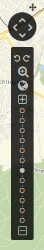
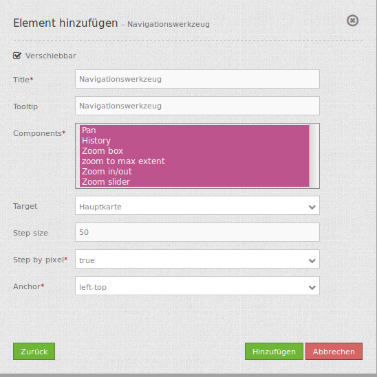

Navigation Toolbar (Zoombar) (Navigationswerkzeug)¶
Das Navigationswerkzeug bietet die Funktionen Zoomen und Verschieben an, ähnlich wie bei OpenLayers.
{kind=link}
Konfiguration¶
{kind=link}
- Verschiebbar: Navigationswerkzeug ist verschiebbar oder nicht, Standard ist true
- Title: Titel des Elements. Dieser wird in der Layouts Liste angezeigt und ermöglicht, mehrere Button-Elemente voneinander zu unterscheiden. Der Titel wird außerdem neben dem Button angezeigt, wenn “Beschriftung anzeigen” aktiviert ist.
- Tooltip: Text, der angezeigt wird, wenn der Mauszeiger eine längere Zeit über dem Element verweilt.
- Components: Komponenten des Navigationswerkzeugs, Standardmäßig wird alles selektiert
- Target: ID des Kartenelements, auf das sich das Element bezieht.
- Step size: Schrittweite für das Verschieben
- Step by pixel: Schritttyp: Pixel oder Prozent, false = Prozent, Standard ist false
- Anchor: Ausrichtung des Navigationswerkzeugs, Standard ist ‘left-top’ (oben-links)
YAML-Definition:¶
tooltip: 'Navigation Toolbar' # Text des Tooltips
components: array("pan", # Komponenten des Navigationswerkzeugs, Standardmäßig wird alles selektiert.
"history","zoom_box",
"zoom_max","zoom_slider")
target: ~ # ID des Kartenelements
stepSize: 50 # Schrittweite für das Verschieben
stepByPixel: false # Schritttyp: Pixel oder Prozent, false = Prozent, Standard ist false
anchor: 'inline'/'left-top'/ # Ausrichtung des Navigationswerkzeugs, Standard ist 'left-top' (oben-links)
'left-bottom'/'right-top'/ # Benutzen Sie inline z.B. für die Sidebar
'right-bottom'
draggable: true # das Navigationswerkzeug ist verschiebbar oder nicht, Standard ist true
Class, Widget & Style¶
- Class: Mapbender\CoreBundle\Element\ZoomBar
- Widget: mapbender.element.zoombar.js
- Style: mapbender.element.zoombar.css
HTTP Callbacks¶
Keine.
JavaScript API¶
Keine.
JavaScript Signals¶
Keine.